c. 图形库Graphics2D
c. 图形库Graphics2D
更新日期: 2021-01-09
1. 概述
当我们需要处理图片，或者编写游戏时，就可以使用Java Swing中的图形包Graphics2D了。这套图形系统的内容还是比较丰富的。
但要注意的是，它绘制的速度不是很快，用它来写稍大一点的游戏，就会很卡。 在这篇文章中我将总结Graphics2D的用法，以便以后随时查看。 但跟图形绘制有关的主题是非常多的。我将只挑选出感兴趣的来学习：
- 获取Graphics2D对象
- Graphics2D对象的属性
- 颜色
- 画笔属性
- 混合模式
- 裁剪区域
- 坐标变换
- 渲染质量
- 字体
- 绘制
- 几何图形
- 文字
- 图片
2. 获取Graphics2D对象
Swing程序中看的见的东西都是用Graphics2D画出来的。比如窗口里的各种控件：按钮、单选按钮、滚动条等。
这些组件都继承自Swing里面的JComponent类。这个类提供了一个绘制组件的方法：paintComponent，如果想自己绘制控件，就可以覆盖这个方法。注意不要使用paint方法，paintComponent自动提供了双缓冲机制，用起来更舒服。
这个方法将给我们传递一个Graphics2D参数进来。
下面我将创建一个文本区域，来演示一下如何获取Graphics2D，并使用它来在这个文本区域上进行绘制。
获取Graphics2D
// 自定义一个类来扩展Swing控件
public static class MyText extends JTextArea {
@Override
protected void paintComponent(Graphics g) {
super.paintComponent(g);
// 取得Graphics2D对象
Graphics2D g2 = (Graphics2D)g;
// 绘制文字
g2.setFont(font.deriveFont(48.0f));
g2.setColor(Color.RED);
g2.drawString("这是按钮上的文字!", 0, 100);
// 绘制矩形
g2.setColor(Color.BLUE);
g2.drawRect(20, 20, 80, 200);
}
}
// 创建并显示窗口
private static void displayWindow() {
// 创建JFrame对象
JFrame jFrame = new JFrame();
XXXX 其他代码... ...
// 添加一个文本区域控件
var textArea = new MyText();
textArea.setPreferredSize(new Dimension(400, 400));
textArea.setBorder(new LineBorder(Color.BLACK));
textArea.setText("这是一个文本框\n这是第二行文字\n\n\n\n\n这是不知道第多少行文字");
jPanel.add(textArea);
// 显示窗口
jFrame.setVisible(true);
}
可以看到，通过强制类型转换，得到了Graphics2D对象。然后，使用这个对象绘制了文字和矩形。下面是运行效果： 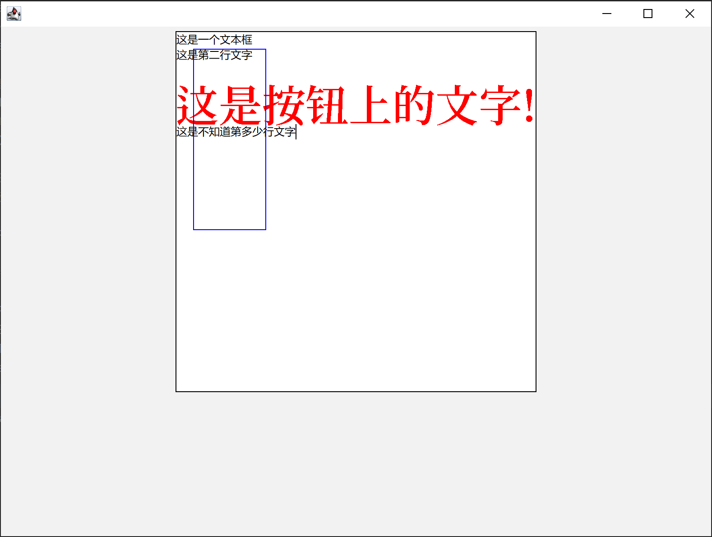
其他所有Swing控件，都是采用同样的方法。我们在做图形绘制程序时，最常用的是在JPanel控件上进行绘制。
后面的例子中，我默认都是在JPanel中进行绘制。
除了在看的见的画板上绘图外，还有另外一种方式。叫做在离屏表面中绘图。 所谓离屏表面，就是指不直接显示在画面上，只存在于内存中的画板。这个技术常用于双缓冲绘图。
在Java中使用BufferedImage来表示离屏表面，可以从这个对象中获取Graphics2D对象。
还是看代码：
离屏表面
3. Graphics2D对象的属性
通过调整Graphics2D对象的属性，我们可以控制绘制时的各种效果。这里就只学习一下常用的几个比较重要的属性。
既然是属性，就可以通过get和set方法来取得当前属性和设定。后面就不再赘述，介绍的重点是属性的值的含义，以及设定不同的值会有什么效果。
3.1 颜色
颜色的重要性不用多说，绘制几何图形和文字的时候会生效。Swing中使用Paint这个类来表示颜色。
在程序中，创建颜色可以直接使用预定义的常用颜色常量，也可以通过RGBA来指定。
直接看一看代码：
创建颜色
这个属性设定后的效果不用多说。
3.2 画笔属性
画笔属性会直接影响几何形状绘制时的效果。Swing中使用Stroke这个接口来表示，而BasicStroke这个类实现了此接口。它主要包含如下几个子属性：
| No. | ID | 属性名 | 说明 |
|---|---|---|---|
| 1 | width | 画笔宽度 | 画笔的粗细。直接影响绘制图形时线条的粗细。 |
| 2 | end caps | 两端装饰 | 线条两端的样式。具体的效果下面将会演示。 |
| 3 | line joins | 折角装饰 | 主要影响多边形折角处的形状。 |
| 4 | miter limit | 折角裁剪阈值 | 与No.3有关，绘制多边形时有效果，这里不做介绍了。 |
| 5 | dash attributes | 虚线样式 | 用于绘制虚线线条。 |
我们将逐个演示各个属性有什么效果，这样介绍起来更直观一点。
画笔宽度
代码:
// 宽度依次为1,2,4,8,16,32
g2.setStroke(new BasicStroke(1.0f));
g2.drawRect(100, 100, 200, 200);
g2.setStroke(new BasicStroke(2.0f));
g2.drawRect(150, 150, 200, 200);
g2.setStroke(new BasicStroke(4.0f));
g2.drawRect(200, 200, 200, 200);
g2.setStroke(new BasicStroke(8.0f));
g2.drawRect(250, 250, 200, 200);
g2.setStroke(new BasicStroke(16.0f));
g2.drawRect(300, 300, 200, 200);
g2.setStroke(new BasicStroke(32.0f));
g2.drawRect(350, 350, 200, 200);
效果：
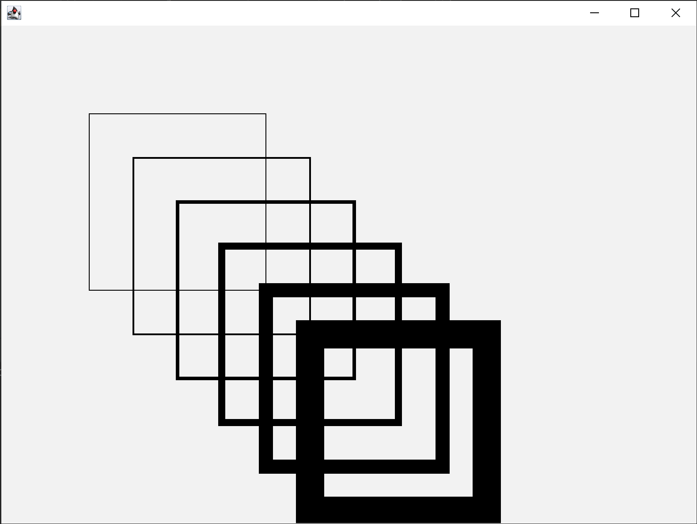
两端装饰只有在线条比较粗的时候才能看的清除，所以我直接用一个比较粗的画笔来绘制。
两端装饰
代码:
g2.setStroke(new BasicStroke(32.0f, BasicStroke.CAP_BUTT, BasicStroke.JOIN_BEVEL));
g2.drawString("无装饰", 50, 110);
g2.drawLine(250, 100, 600, 100);
g2.setStroke(new BasicStroke(32.0f, BasicStroke.CAP_ROUND, BasicStroke.JOIN_BEVEL));
g2.drawString("圆角装饰", 50, 210);
g2.drawLine(250, 200, 600, 200);
g2.setStroke(new BasicStroke(32.0f, BasicStroke.CAP_SQUARE, BasicStroke.JOIN_BEVEL));
g2.drawString("方形装饰", 50, 310);
g2.drawLine(250, 300, 600, 300);
效果：
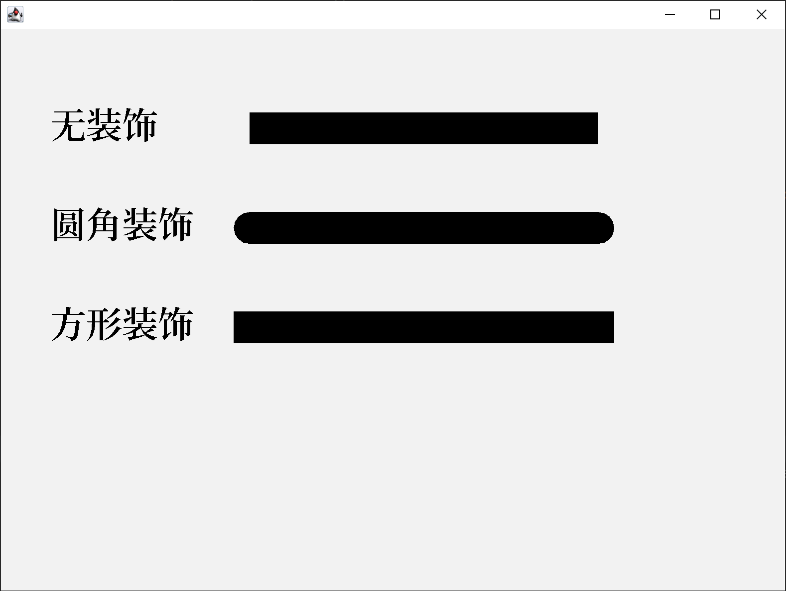
接下来是折角装饰，与两端装饰类似，只是应用的部位不一样。
折角装饰
代码:
g2.setStroke(new BasicStroke(32.0f, BasicStroke.CAP_BUTT, BasicStroke.JOIN_BEVEL));
g2.setPaint(Color.RED);
g2.drawString("直线装饰", 50, 110);
g2.drawRect(250, 100, 400, 150);
g2.setStroke(new BasicStroke(32.0f, BasicStroke.CAP_BUTT, BasicStroke.JOIN_ROUND));
g2.setPaint(Color.GREEN);
g2.drawString("圆角装饰", 50, 210);
g2.drawRect(350, 200, 400, 150);
g2.setStroke(new BasicStroke(32.0f, BasicStroke.CAP_BUTT, BasicStroke.JOIN_MITER));
g2.setPaint(Color.BLUE);
g2.drawString("交点闭合装饰", 50, 310);
g2.drawRect(300, 300, 400, 150);
效果：
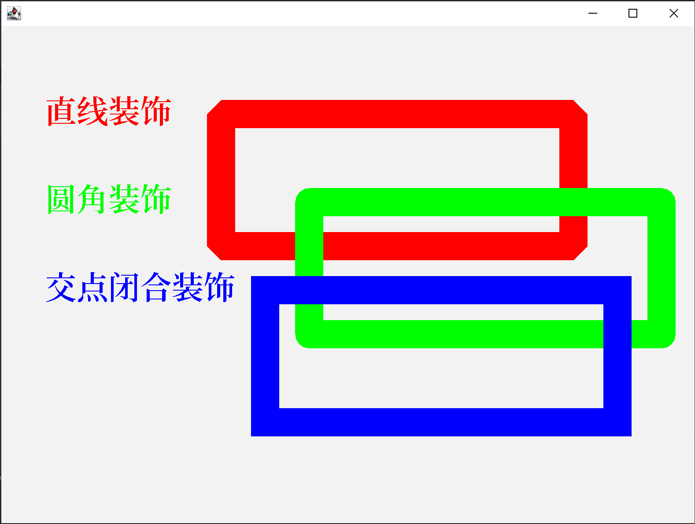
最后是虚线样式，这个可以用来生成各种样式的虚线。通过下面的参数来定义：
- 虚线模式数组
- 虚线第一段开始位置
虚线模式数组是一个包含偶数个数值的数组。比如：[20, 8, 10, 8]。它表示的含义是：
- 绘制一个20长度的线段
- 空出8长度的距离
- 绘制一个10长度的线段
- 空出8长度的距离
- 从1.开始重复绘制
虚线第一段开始位置顾名思义，就是说第一个线段从哪里开始绘制。比如还是上面的例子，我指定开始位置为10时。 由于第一段线段长为20，所以第一段从一半的位置开始绘制。
具体的用法还是直接看例子演示。
虚线样式
代码:
g2.setStroke(new BasicStroke(8.0f, BasicStroke.CAP_BUTT, BasicStroke.JOIN_MITER, 1,
new float[]{20, 8, 10, 8}, 0));
g2.setPaint(Color.BLACK);
g2.drawString("虚线", 50, 110);
g2.drawLine(400, 100, 600, 100);
g2.setStroke(new BasicStroke(8.0f, BasicStroke.CAP_BUTT, BasicStroke.JOIN_MITER, 1,
new float[]{20, 8, 10, 8}, 10));
g2.setPaint(Color.BLUE);
g2.drawString("虚线(从10开始)", 50, 210);
g2.drawLine(400, 200, 600, 200);
效果：
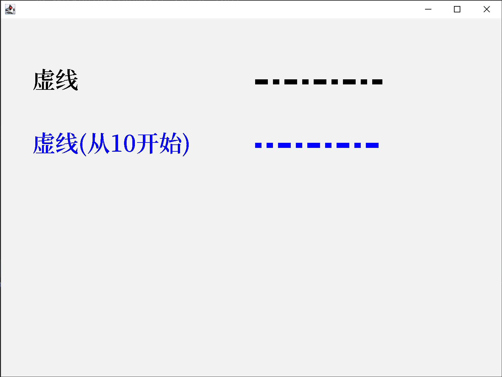
同时，虚线的每个小线段的端点都受两端装饰和折角装饰的影响。看下面的演示。
虚线的线段装饰
代码:
g2.setStroke(new BasicStroke(8.0f, BasicStroke.CAP_BUTT, BasicStroke.JOIN_ROUND, 1,
new float[]{20, 8, 10, 8}, 0));
g2.setPaint(Color.BLACK);
g2.drawString("两端无装饰，折角圆角装饰", 50, 110);
g2.drawRect(50, 140, 300, 80);
g2.setStroke(new BasicStroke(8.0f, BasicStroke.CAP_ROUND, BasicStroke.JOIN_MITER, 1,
new float[]{20, 10, 0, 10}, 10));
g2.setPaint(Color.BLUE);
g2.drawString("两端圆角装饰，折角闭合装饰", 50, 310);
g2.drawRect(50, 340, 300, 80);
效果：
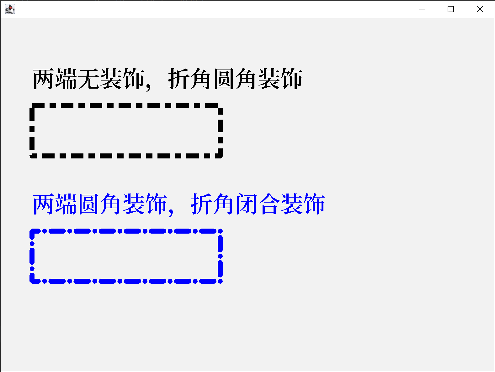
3.3 混合模式
混合模式，也叫颜色混合模式。所谓混合，是指在进行绘制时，将要绘制的颜色与画板上已有的颜色进行混合。 其实和现实世界中的画画有点类似。
比如：
- 我用覆盖性强的丙烯颜料涂在画布上，则画布上本来的颜料都会被盖住，只呈现我新涂的颜色。
- 我用透明的水彩颜料涂在画布上，则画布上本身的颜料不会被完全覆盖，会呈现出一种半透明效果。
在使用程序绘图时，有类似的概念，而且有很多很多种混合模式。具体可以参考Java官方文档：
这部分的算法相当复杂，我们不需要关心具体的细节。我们最经常使用的混合模式只有一种，就是SRC_OVER模式。这个模式下会按照Alpha通道的值对源和目标的颜色做一个混合。
Alpha值为1，则源颜色覆盖目标颜色，也即是我们提到的覆盖性强的丙烯颜料的效果。Alpha值小于1，则源颜色混合目标颜色，也即是我们提到的透明水彩颜料的效果。Alpha值越小，颜料也就越透明。
直接看例子：
混合模式
代码:
// 绘制一个蓝色的矩形
g2.setComposite(AlphaComposite.getInstance(AlphaComposite.SRC_OVER));
g2.setPaint(Color.BLUE);
g2.fillRect(100, 100, 300, 200);
// 在蓝色矩形上，绘制一个绿色的矩形，透明度为50%
g2.setComposite(AlphaComposite.getInstance(AlphaComposite.SRC_OVER, 0.5f));
g2.setPaint(Color.GREEN);
g2.fillRect(200, 200, 300, 200);
// 在绿色矩形上，绘制一个黄色的矩形，透明度为30%
g2.setComposite(AlphaComposite.getInstance(AlphaComposite.SRC_OVER, 0.3f));
g2.setPaint(Color.YELLOW);
g2.fillRect(100, 300, 300, 200);
效果：
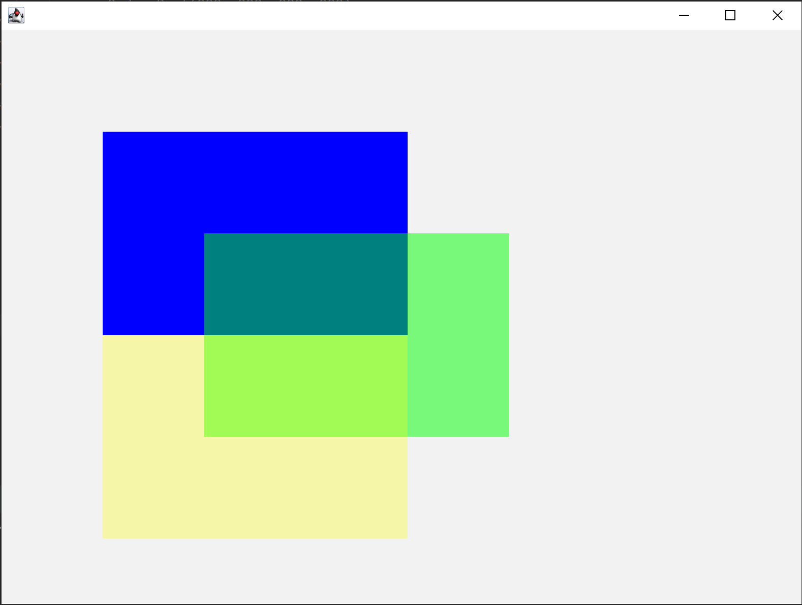
3.3 裁剪区域
所谓裁剪区域，就是指设定一个区域，所有的绘图只在这个区域范围内是有效的。超出这个区域的部分不会进行绘制。
下面这个例子中，我先后创建了一个矩形和一个圆形的裁剪区域。他们相交的部分是最终的裁剪区域。
裁剪区域
代码:
// 绘制裁剪区域图形的框线以易于辨认
g2.drawRect(200, 200, 300, 300);
g2.drawOval(250, 250, 350, 350);
// 创建裁剪区域
g2.clipRect(200, 200, 300, 300);
g2.clip(new Ellipse2D.Float(250, 250, 350, 350));
// 绘制一个蓝色的矩形
g2.setComposite(AlphaComposite.getInstance(AlphaComposite.SRC_OVER));
g2.setPaint(Color.BLUE);
g2.fillRect(100, 100, 300, 200);
// 在蓝色矩形上，绘制一个绿色的矩形，透明度为50%
g2.setComposite(AlphaComposite.getInstance(AlphaComposite.SRC_OVER, 0.5f));
g2.setPaint(Color.GREEN);
g2.fillRect(200, 200, 300, 200);
// 在绿色矩形上，绘制一个黄色的矩形，透明度为30%
g2.setComposite(AlphaComposite.getInstance(AlphaComposite.SRC_OVER, 0.3f));
g2.setPaint(Color.YELLOW);
g2.fillRect(100, 300, 300, 200);
效果：
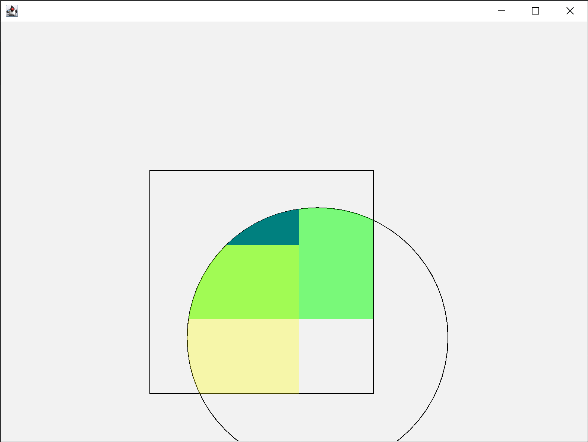
使用clip系列函数时，默认是拿现有的裁剪区域与新的裁剪区域相交，得到一个更小的裁剪区域。
如果要想直接设定当前裁剪区域，请使用setClip系列函数，这将无视当前裁剪区域，直接将新的裁剪区域设定为新的当前裁剪区域。
3.3 坐标变换
坐标变换是一个相对来说比较复杂的东西，我们仍然是只学习最常用的那一部分。
基础的变换主要分为3大类，想必我们在数学课上都已经学过了。也就是：
- 平移变换
- 缩放变换
- 旋转变换
同时，变换之间也可以相互组合，形成组合变换。我们在学习矩阵运算的时候应该也大概学习过。 而在程序中，这些变换确实也是通过矩阵运算来实现的。
Swing中使用AffineTransform来表示变换矩阵。这也是Graphics2D的其中一个属性。所有的三种变换都是通过操作这个属性来实现的。
3.3.1 平移变换
最简单的一种变换，只需指定一个x和y的偏移量就可以了。直接看例子。
平移变换
代码:
g2.drawString("原来的图形", 50, 100);
g2.drawRect(50, 150, 200, 100);
g2.setPaint(Color.BLUE);
// 取得当前变换矩阵
var oldTransform = g2.getTransform();
// 进行平移变换
g2.translate(80, 90);
g2.drawString("变换后的图形", 50, 100);
g2.drawRect(50, 150, 200, 100);
// 恢复原来的变换矩阵
g2.setTransform(oldTransform);
效果：
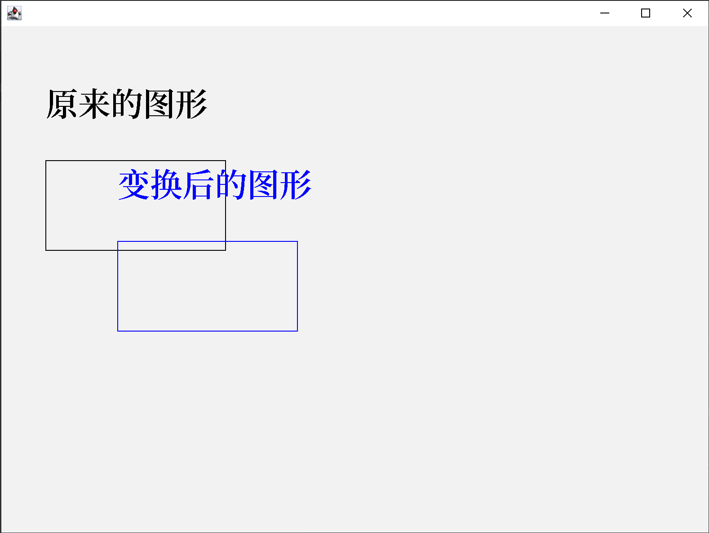
3.3.2 缩放变换
指定一个x和y的缩放倍数就可以了，将会以(0, 0)为原点进行缩放。还是看例子。
缩放变换
代码:
g2.drawString("原来的图形", 50, 100);
g2.drawRect(50, 150, 200, 100);
g2.drawRect(0, 0, 500, 300);
g2.setPaint(Color.RED);
// 取得当前变换矩阵
var oldTransform = g2.getTransform();
// 进行缩放变换
g2.scale(1.5, 1.5);
g2.drawString("变换后的图形", 50, 100);
g2.drawRect(50, 150, 200, 100);
g2.drawRect(0, 0, 500, 300);
// 恢复原来的变换矩阵
g2.setTransform(oldTransform);
效果：
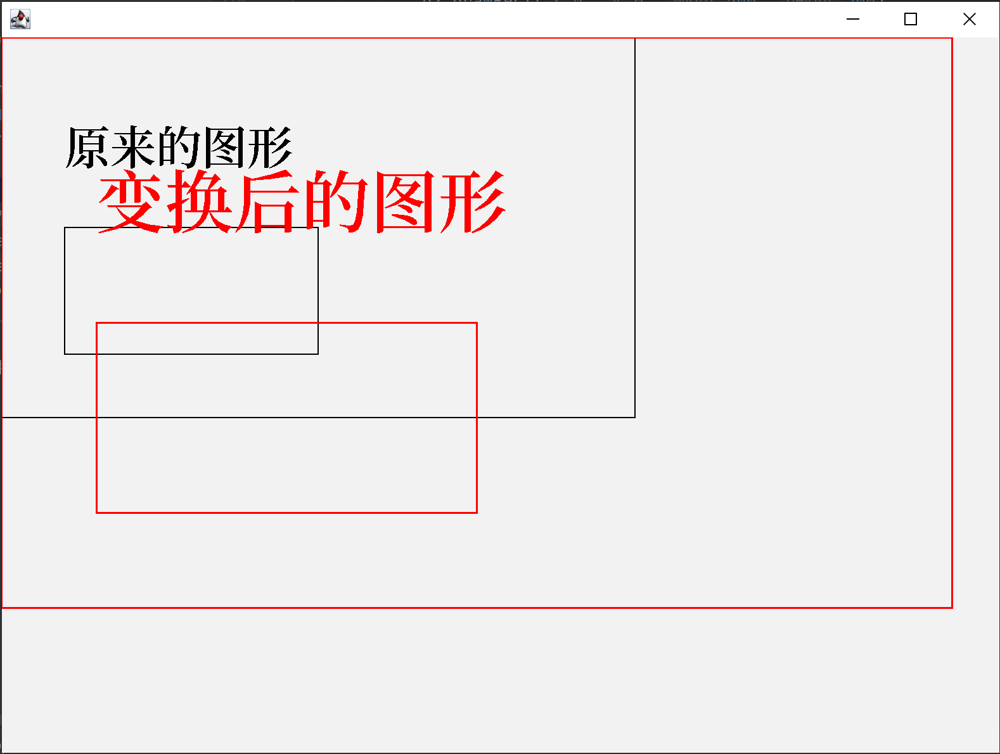
3.3.3 旋转变换
通常是指定一个旋转的中心点，再指定一个旋转角度(顺时针)。 由于可以指定的方式比较多，这里只演示指定中心点的坐标和度数时的情形。
旋转
代码:
Rectangle rect = new Rectangle(300, 550, 200, 100);
g2.drawString("原来的图形", rect.x, rect.y + 35);
g2.drawRect(rect.x, rect.y, rect.width, rect.height);
// 取得当前变换矩阵
var oldTransform = g2.getTransform();
// 绘制旋转路径的圆
g2.drawOval(50, 50, 500, 500);
// 旋转60度
g2.setPaint(Color.RED);
g2.rotate(- Math.PI / 3, 300, 300);
g2.drawString("旋转后的图形", rect.x, rect.y + 35);
g2.drawRect(rect.x, rect.y, rect.width, rect.height);
// 再旋转60度
g2.setPaint(Color.BLUE);
g2.rotate(- Math.PI / 3, 300, 300);
g2.drawString("二次旋转后的图形", rect.x, rect.y + 35);
g2.drawRect(rect.x, rect.y, rect.width, rect.height);
// 恢复原来的变换矩阵
g2.setTransform(oldTransform);
效果：
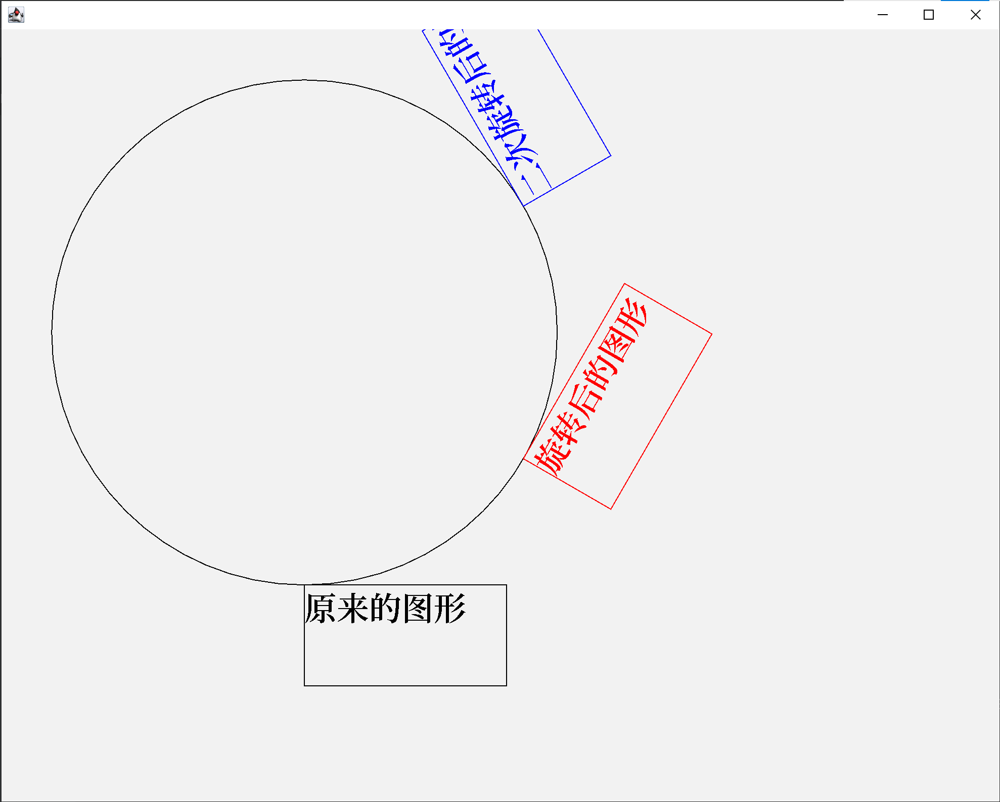
在旋转的时候，有一种特殊的旋转，就是整90度旋转。这种旋转明显不需要进行复杂的矩阵运算，为此专门提供了一系列函数用来进行这种操作。另外即使不明确使用这个系列的函数，仍然使用普通的函数，实际在旋转的过程中，会判断角度是否非常接近整90度，如果是的话，会自动调用这个系列的函数。
来看一下例子吧：
整90度旋转
代码:
Rectangle rect = new Rectangle(300, 550, 200, 100);
drawStringLeftTop(g2,"原来的图形", 32, rect.x, rect.y);
g2.drawRect(rect.x, rect.y, rect.width, rect.height);
// 取得当前变换矩阵
var oldTransform = g2.getTransform();
// 绘制旋转路径的圆
g2.drawOval(50, 50, 500, 500);
// 旋转90度
g2.setPaint(Color.RED);
g2.transform(AffineTransform.getQuadrantRotateInstance(-1, 300, 300));
drawStringLeftTop(g2,"旋转90度后的图形", 32, rect.x, rect.y);
g2.drawRect(rect.x, rect.y, rect.width, rect.height);
// 再旋转90度
g2.setPaint(Color.BLUE);
g2.transform(AffineTransform.getQuadrantRotateInstance(-1, 300, 300));
drawStringLeftTop(g2,"再次旋转90度后的图形", 32, rect.x, rect.y);
g2.drawRect(rect.x, rect.y, rect.width, rect.height);
// 再旋转90度
g2.setPaint(Color.BLUE);
g2.transform(AffineTransform.getQuadrantRotateInstance(-1, 300, 300));
drawStringLeftTop(g2,"再次旋转90度后的图形", 32, rect.x, rect.y);
g2.drawRect(rect.x, rect.y, rect.width, rect.height);
// 恢复原来的变换矩阵
g2.setTransform(oldTransform);
效果：
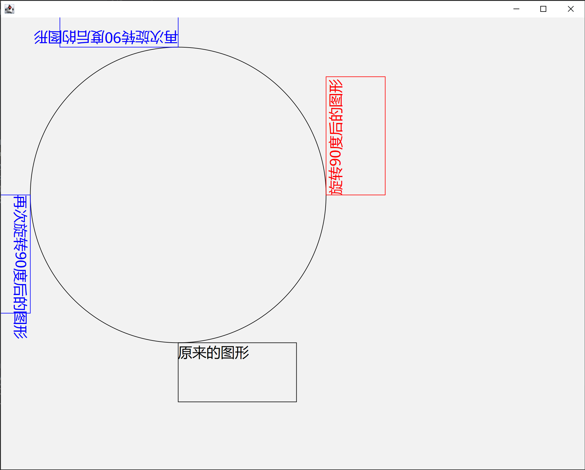
3.3.4 组合变换
这次我们看看如何进行组合变换，首先假定我们要完成这样一个绘制任务。
绘制任务
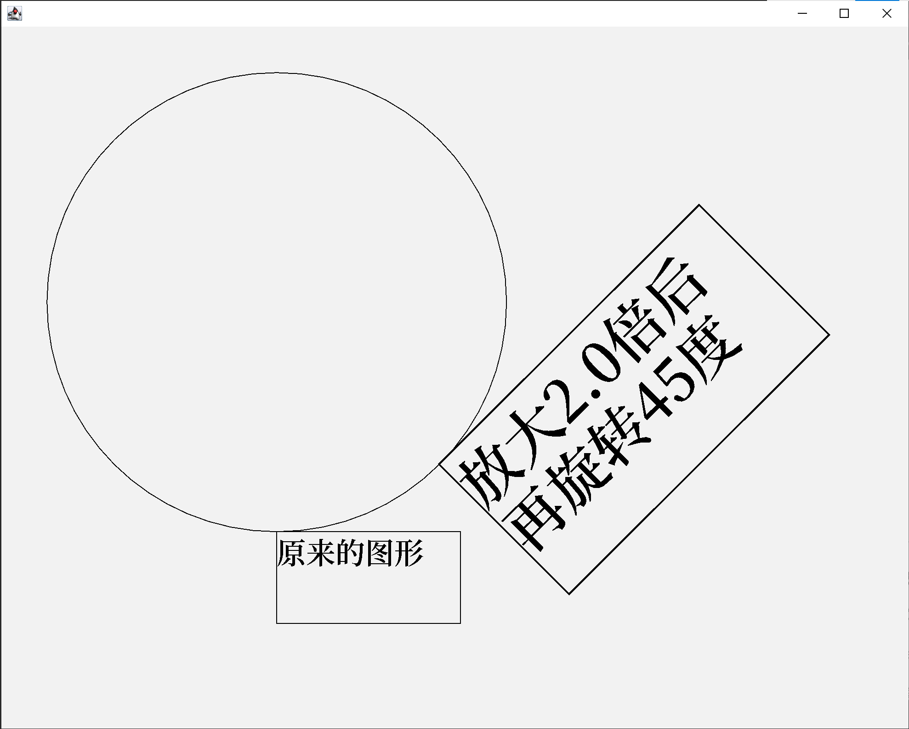
也就是要把原来的矩形，原地放大2倍后，再逆时针旋转45度。
经过一番推导，可以得到如下的变换步骤。
- 1.将矩形移动到原点(0,0)的位置 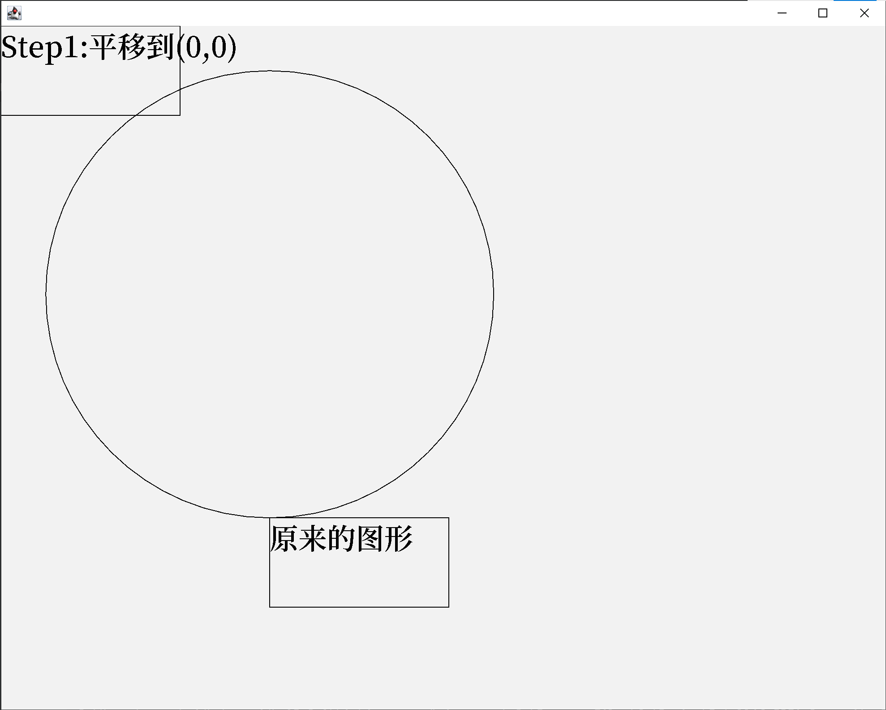
- 2.放大到2倍 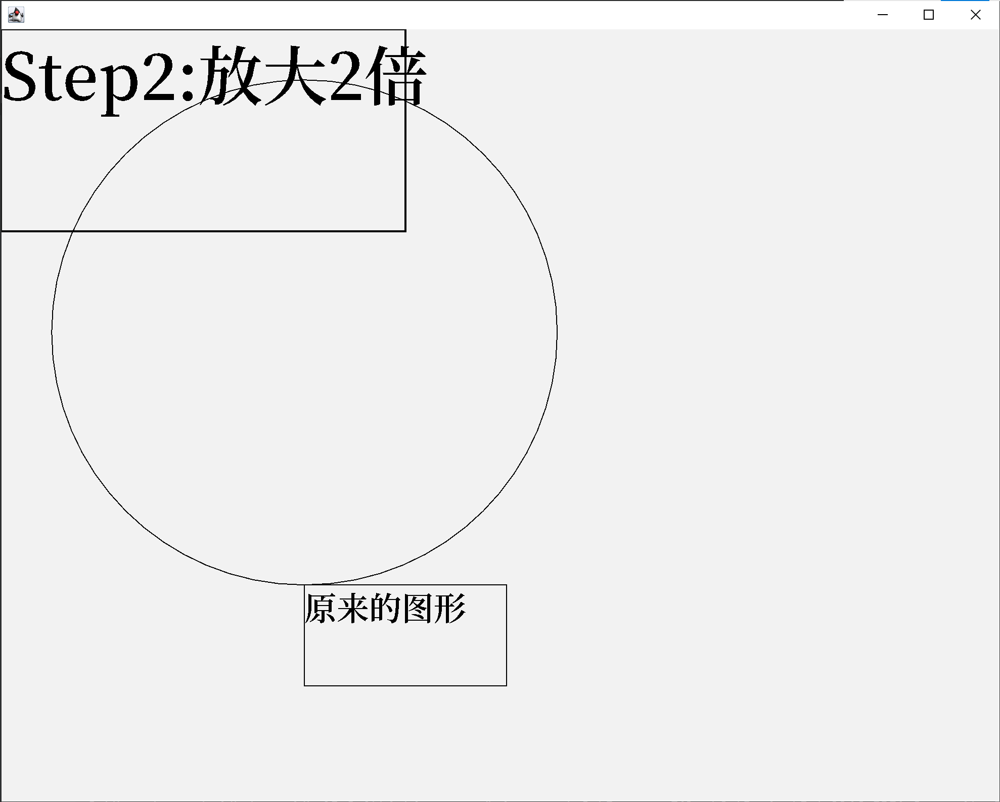
- 3.平移回原来的位置 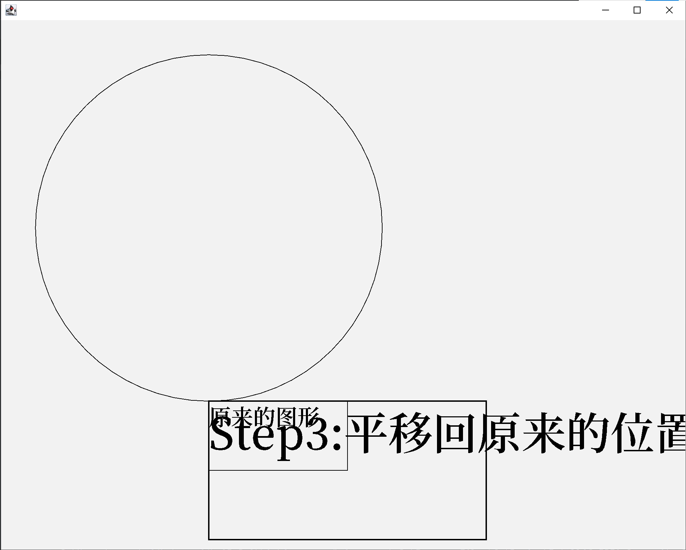
- 4.沿圆心逆时针旋转45度 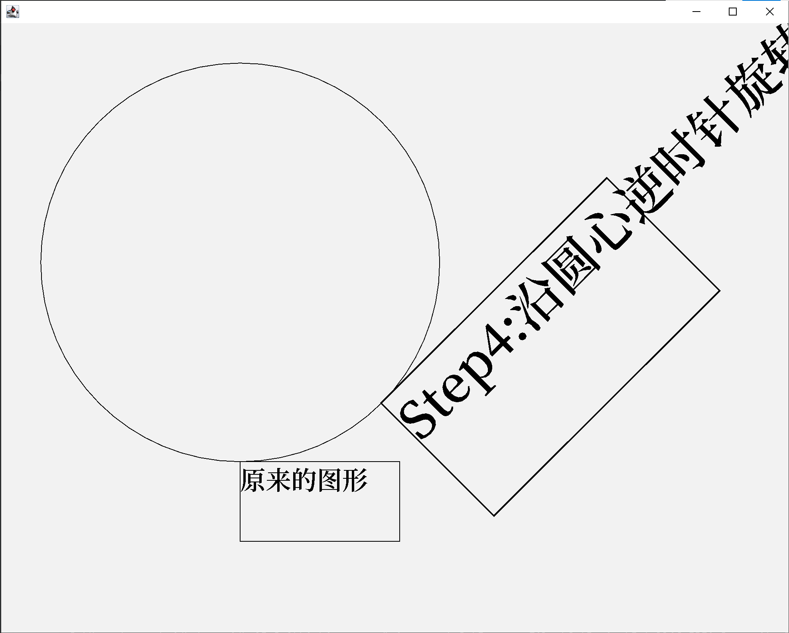
得到了这个步骤之后，我们在程序里面要把这个步骤给倒过来。也就是按照下面的代码：
倒序执行变换步骤的代码
掌握了这个规律后，相信其它的任何复杂的绘制任务都不会是什么难事了。 这个任务完整的演示代码和效果如下：
组合变换
代码:
Rectangle rect = new Rectangle(300, 550, 200, 100);
g2.drawString("原来的图形", rect.x, rect.y + 35);
g2.drawRect(rect.x, rect.y, rect.width, rect.height);
// 取得当前变换矩阵
var oldTransform = g2.getTransform();
// 绘制旋转路径的圆
int circleX = 300;
int circleY = 300;
int circleR = 250;
g2.drawOval(circleX - circleR, circleY - circleR, 2 * circleR, 2 * circleR);
double scale = 2d;
g2.setTransform(oldTransform);
// 4.沿圆心逆时针旋转45度
g2.rotate(- Math.PI / 4, circleX, circleY);
// 3.平移回原来的位置
g2.translate(rect.x, rect.y);
// 2.放大到2倍
g2.scale(2, 2);
// 1.将矩形移动到原点(0,0)的位置
g2.translate(-rect.x, -rect.y);
String text = String.format("组合变换结果");
g2.drawString(text, rect.x, rect.y + 35);
g2.drawRect(rect.x, rect.y, rect.width, rect.height);
效果：
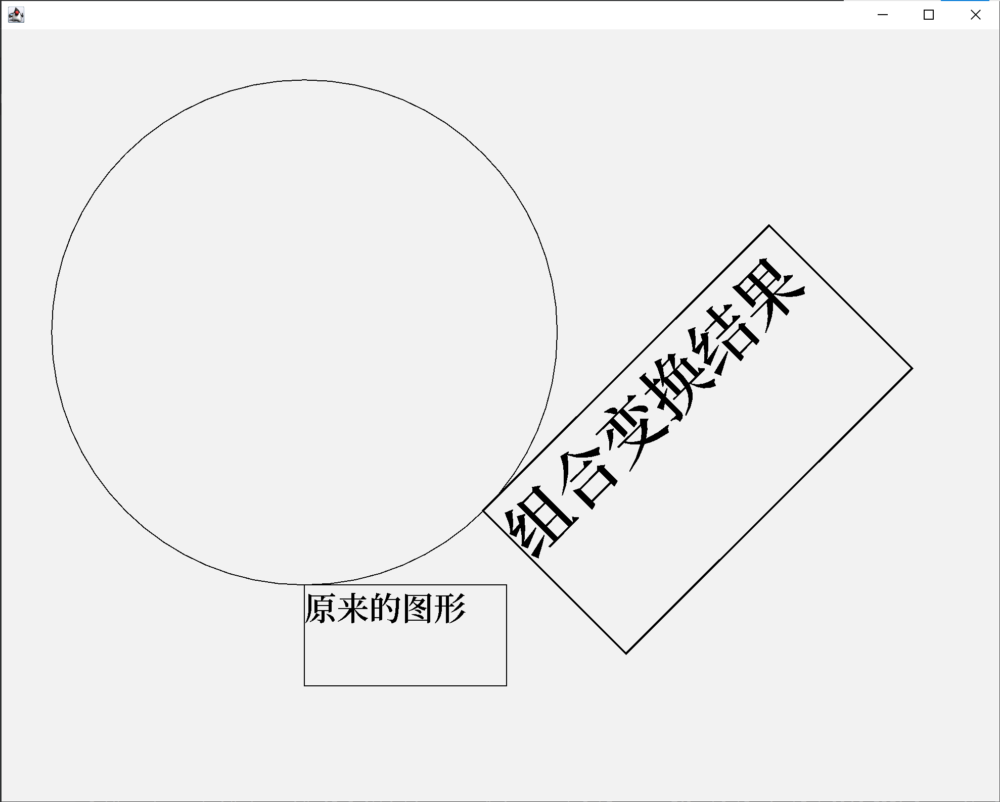
3.4 渲染质量
Graphics2D中提供了很多控制选项来控制图形绘制的质量。这些选项存放在一个叫做renderingHint的Map类型的属性中。
这个Map中的选项比较多，其中比较重要的选项有：
| 选项ID | 含义 |
|---|---|
| KEY_ALPHA_INTERPOLATION | Alpha混合的插值算法 |
| KEY_ANTIALIASING | 抗锯齿 |
| KEY_COLOR_RENDERING | 色彩渲染 |
| KEY_DITHERING | 色彩精度 |
| KEY_INTERPOLATION | 插值算法 |
| KEY_RENDERING | 渲染质量 |
| KEY_TEXT_ANTIALIASING | 字体抗锯齿 |
选项的值设定很简单，都是从ON/OFF或者从质量/速度里面二选一的。
这些选项的默认值都是在绘制质量与速度中比较平衡的。
如果是对绘制质量要求很高，则可以把所有的设置开到最高。 如果是对绘制速度有一定的要求，则可以酌情调整。
我在编写游戏时使用的配置是：
| 选项ID | 含义 | 选择的值 |
|---|---|---|
| KEY_ALPHA_INTERPOLATION | Alpha混合的插值算法 | 默认值 |
| KEY_ANTIALIASING | 抗锯齿 | VALUE_ANTIALIAS_OFF |
| KEY_COLOR_RENDERING | 色彩渲染 | VALUE_COLOR_RENDER_SPEED |
| KEY_DITHERING | 色彩精度 | 默认值 |
| KEY_INTERPOLATION | 插值算法 | VALUE_INTERPOLATION_BILINEAR |
| KEY_RENDERING | 渲染质量 | VALUE_RENDER_SPEED |
| KEY_TEXT_ANTIALIASING | 字体抗锯齿 | VALUE_TEXT_ANTIALIAS_ON |
下面演示一下默认质量和最高质量的效果：
| 默认质量 | 高质量 |
|---|---|
| 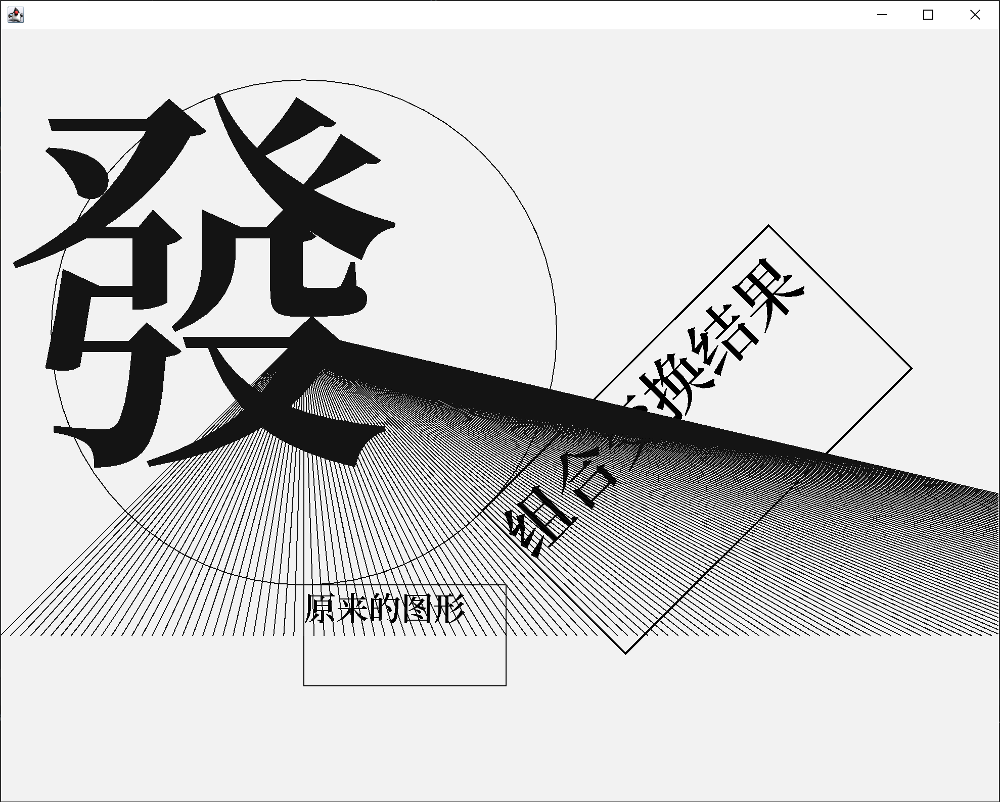 | |
| 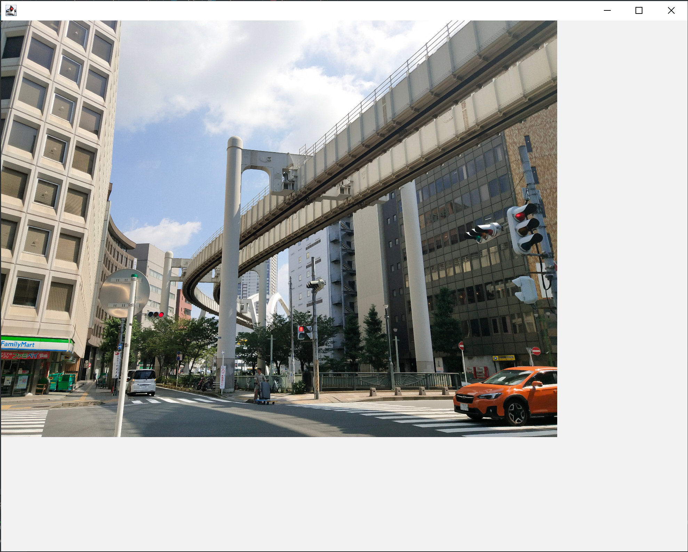 | |
| 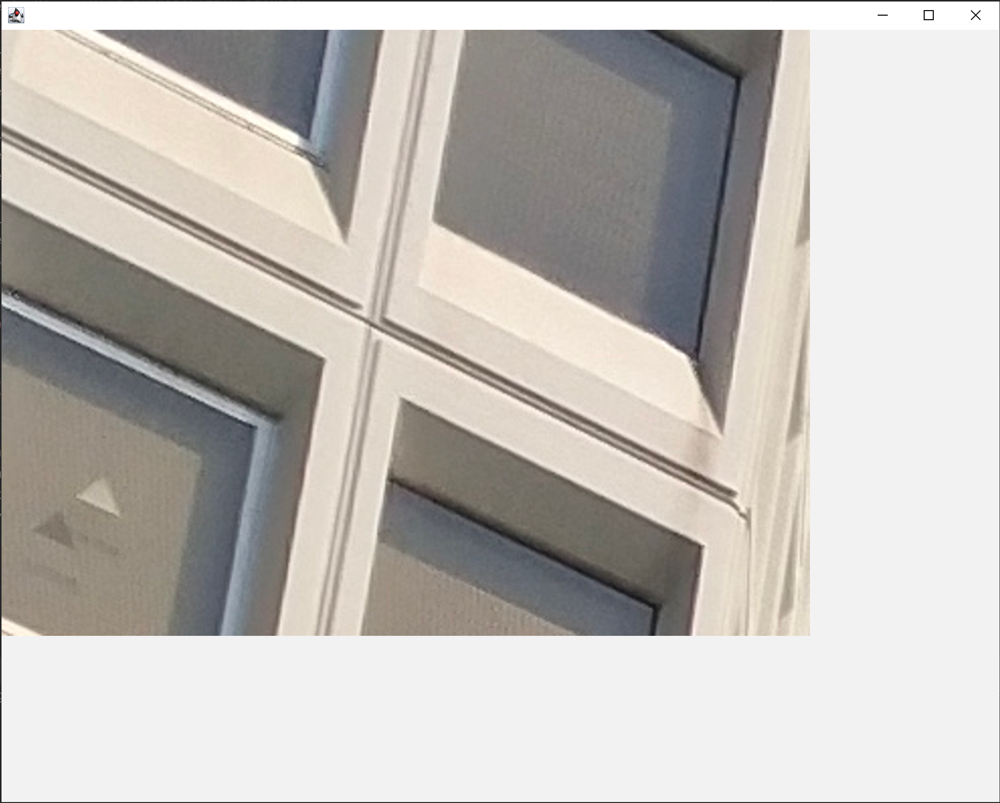 |
区别不算特别大，但是细看的话高质量确实是平滑无比。
3.5 字体
字体这一属性我们早已经使用过了，在Swing中用Font类来表示字体。
在1.6.2 将字体文件嵌入程序内这一篇文章中我们已经学习了加载字体和字体的一些简单用法。
这里我们来看一看更多用法。
首先是设置字体大小。看下面的代码：
然后是字体的样式，就是粗体和斜体之类的。
设置字体样式
代码:
// 设定字体样式和大小
g2.setFont(g2.getFont().deriveFont(Font.PLAIN, 32.0f));
g2.drawString("Font.PLAIN -> Hello, 这是一个演示程序。", 0, 200);
g2.setFont(g2.getFont().deriveFont(Font.BOLD, 32.0f));
g2.drawString("Font.BOLD -> Hello, 这是一个演示程序。", 0, 250);
g2.setFont(g2.getFont().deriveFont(Font.ITALIC, 32.0f));
g2.drawString("Font.ITALIC -> Hello, 这是一个演示程序。", 0, 300);
g2.setFont(g2.getFont().deriveFont(Font.BOLD | Font.ITALIC, 32.0f));
g2.drawString("Font.BOLD | Font.ITALIC -> Hello, 这是一个演示程序。", 0, 350);
效果：
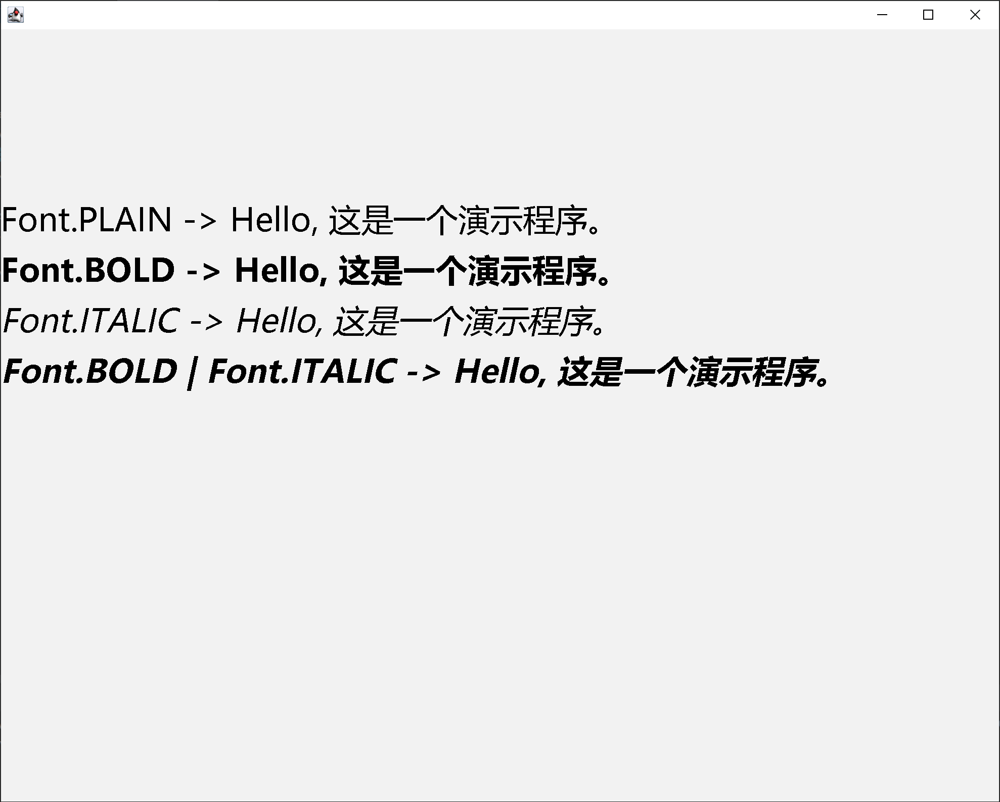
字体还有更多复杂的用法，比如字体布局、字体坐标变换等，这里就不再介绍了。
4. 绘制
Graphics2D提供了很多用于进行图形绘制的方法。主要用于绘制如下的图形对象：
- 几何图形
- 文字
- 图片
4.1 几何图形
几何图形包括了：直线、多边形、矩形、圆形。多边形用到的不多而且比较麻烦，这里就不多讨论了。
绘制方法非常简单，前面其实已经用过很多次了。这里直接用例子来演示一下：
绘制几何图形
代码:
// 绘制直线
g2.drawLine(100, 100, 400, 800);
g2.drawLine(200, 300, 200, 700);
// 绘制矩形
g2.drawRect(50, 80, 400, 100);
g2.drawRect(300, 200, 500, 500);
// 绘制圆形
g2.drawOval(500, 500, 200, 100);
g2.drawOval(400, 60, 400, 400);
效果：
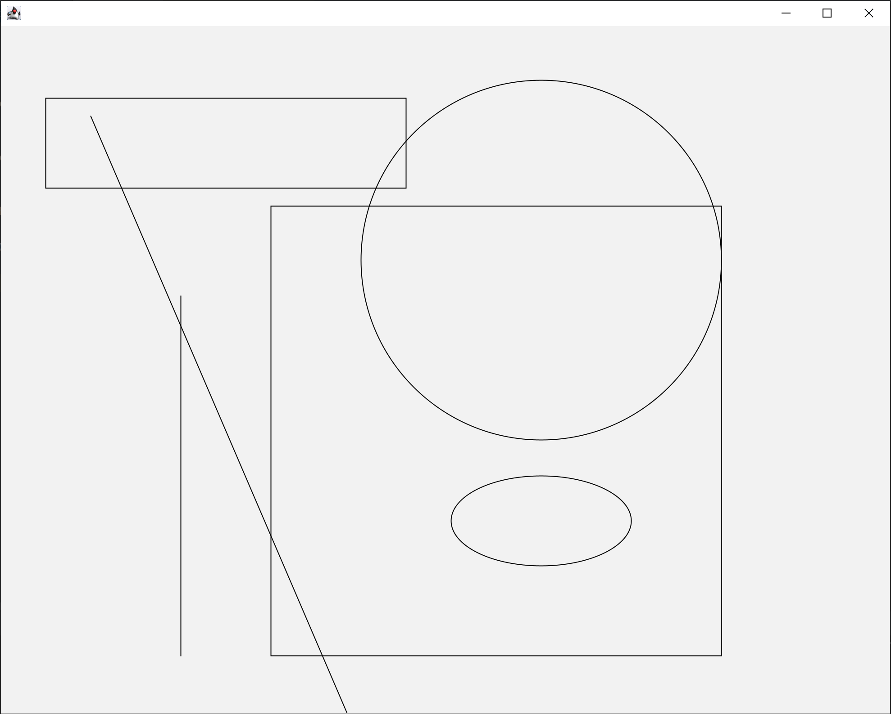
4.2 文字
文字的绘制，我们前面已经多次提到过了。这里想补充说明的是文字的绘制位置问题。
Graphics2D提供的函数drawString在绘制的时候，y轴是按照文字基准线baseLine来指定的。
比如，我想在一个矩形框中绘制文字，但结果却是这样：
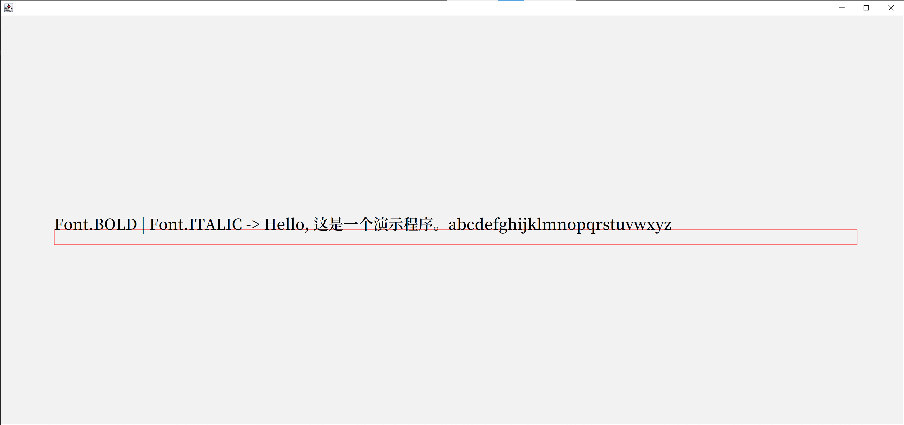
要想方便的调整字体绘制的位置，只能自己调整了，Graphics2D中没有提供方便的绘制方法。 从图中可以看到，如果我们知道文字基准线在字体整体高度中的处于的位置，就是可以调的。
这个计算过程有点麻烦，我封装了一个函数用来在指定的左上角位置开始输出文字：
从左上角开始输出文字
代码:
// 在指定位置绘制文字（左上角）
private void drawStringLeftTop(Graphics2D g2, String text,int fontSizePixel, int x, int y) {
// 显示器的DPI通常为96，计算字体大小
double fontSize= 72.0 * fontSizePixel / 96.0;
// 保存当前字体
Font oldFont = g2.getFont();
// 重新设定字体大小
g2.setFont(oldFont.deriveFont((float) fontSize));
// 绘制表示范围的矩形框
g2.drawRect(x, y, 1500, fontSizePixel);
Font font = g2.getFont();
// 获得文字渲染上下文
var ctx = g2.getFontRenderContext();
// 获得行高标尺
var lineMetries = font.getLineMetrics(text, ctx);
// 获得文字真实高度
float textHeight = lineMetries.getAscent() + lineMetries.getDescent();
// 平衡一下文字高度和显示位置的高度(计算出的文字高度可能比目标区域的高度略高)
float newHeight = (fontSizePixel + textHeight) / 2;
// 获得文字基准线位置
int baseLine = (int)(newHeight - lineMetries.getDescent());
g2.drawString(text, x, y + baseLine);
// 复原到原来的字体
g2.setFont(oldFont);
}
效果：
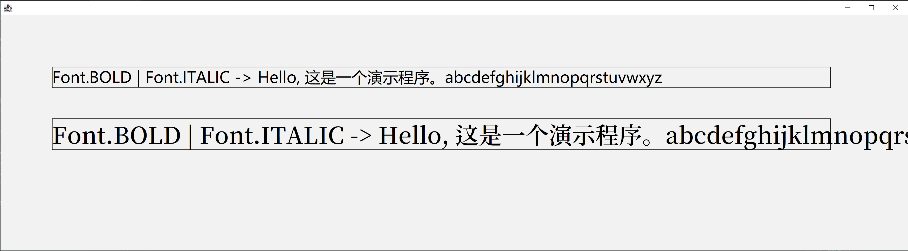
说完了y轴的位置，其实x轴的位置也容易遇到问题。通常我们是从目标位置的最左边开始绘制文字的，但是有时候我们需要居中绘制文字。这时我们如果知道文字绘制之后占据的宽度，就很容易计算了。
同样，我封装了一个函数用来计算这个过程。
居中绘制文字
代码:
// 水平居中绘制文字
private void drawStringCenter(Graphics2D g2, String text, int fontSizePixel, int x, int y, int w) {
// 假定DPI为96，计算字体大小
double fontSize= 72.0 * fontSizePixel / 96.0;
// 保存当前字体
Font oldFont = g2.getFont();
// 重新设定字体大小
g2.setFont(oldFont.deriveFont((float) fontSize));
// 绘制表示范围的矩形框
g2.drawRect(x, y, w, fontSizePixel);
Font font = g2.getFont();
// 获得文字渲染上下文
var ctx = g2.getFontRenderContext();
// 获得行高标尺
var lineMetries = font.getLineMetrics(text, ctx);
// 获得文字真实高度
float textHeight = lineMetries.getAscent() + lineMetries.getDescent();
// 平衡一下文字高度和显示位置的高度(计算出的文字高度可能比目标区域的高度略高)
float newHeight = (fontSizePixel + textHeight) / 2;
// 获得文字基准线位置
int baseLine = (int)(newHeight - lineMetries.getDescent());
// 计算文字渲染后的宽度
double textWidth = font.getStringBounds(text, ctx).getWidth();
g2.drawString(text, x + (int)(w - textWidth) / 2, y + baseLine);
// 复原到原来的字体
g2.setFont(oldFont);
}
效果：
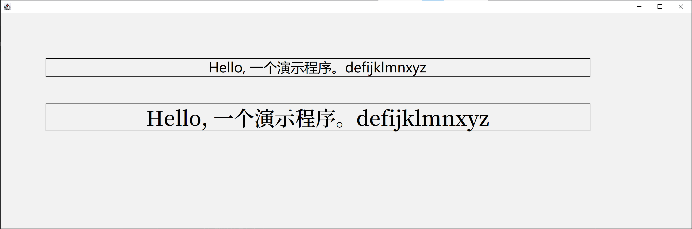
4.3 图片
图片的绘制是非常常用的操作了，在绘制的过程中可以进行各种裁剪操作。并且根据源图片和目标区域的大小自动进行缩放。让我们直接看代码。
绘制图片
代码:
// 按目标区域进行缩放绘图
g2.drawImage(img, 100, 100, 400, 300, null);
// 只显示图片的一部分
g2.drawImage(img, 520, 100, 520 + 200, 100 + 200, 1000, 1200, 1600, 1800, null);
// 水平反转贴图(使sx2 < sx1)
g2.drawImage(img, 520, 320, 520 + 200, 320 + 200, 1000, 1200, 400, 1800, null);
// 垂直反转贴图(使sy2 < sy1)
g2.drawImage(img, 100, 420, 500, 720, 0, img.getHeight(null), img.getWidth(null), 0, null);
效果：